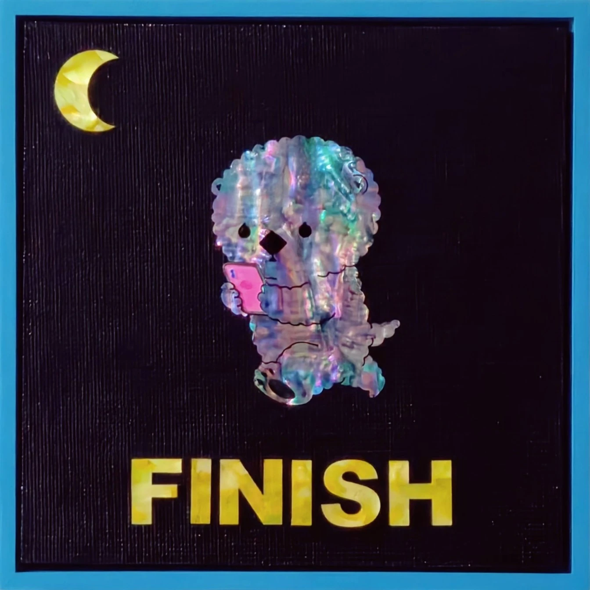

POV : 퇴근POV : Off Work
POV : Off WorkPOV : 퇴근
목심저피나전칠기(천연자개, 옻칠, 삼베 등) · 20 × 20 cm · 2026Najeonchilgi (Mother-of-pearl, Lacquer, Hemp cloth, etc.) · 20 × 20 cm · 2026
조개배달부 얼빵해달의 하루가 저물고 있다. 즐거운 퇴근길, SNS에 재밌는 게 올라와 있다. 얼른 집에 가서 각 잡고 봐야지. 근로기준법이 정한 오늘의 노동, 취업규칙이 정한 종업시각(FINISH)이 지금 막 카운트되었다.The day is winding down for the Shell Delivery Spaced-out Sea Otter. A happy commute home — something fun has just been posted on social media. Better get home and settle in to watch it properly. The workday defined by the Labor Standards Act ends: the finishing time (FINISH) set by the Rules of Employment has just been counted.
전시 이력Exhibitions
- 2026.06.17 – 2026.06.22 인사아트위크 2026, 리수갤러리, 서울, 대한민국2026.06.17 – 2026.06.22 INSA ART WEEK 2026, Leesoo Gallery, Seoul, KR
- 2026.05.13 – 2026.05.18 재료의 언어, 마루아트센터, 서울, 대한민국2026.05.13 – 2026.05.18 The Language of Materials, Maru Art Center, Seoul, KR